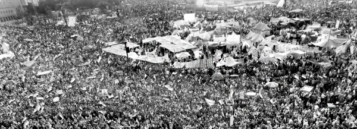

The Rebbe on Regime Change in an Arab Country
On Shabbos Parshas Mishpatim 5752, the Rebbe revealed that the one behind all the global upheavals was the Rebbe himself, in his role as Moshiach. He is preparing the world for the new era of “grinding swords into plowshares.” * An extraordinary story, that I heard from my brother-in-law R’ Leibel Groner, sheds new light on how we Chassidim need to look at what is going on in the world. * My friends and brothers, the Rebbe is behind the headlines and he wants us to understand them as such.

Two years ago, when the Arab Spring spread from Tunisia to Egypt, I wrote in Beis Moshiach that as Chabad Chassidim, we need to look at these global events and understand that they are part of Moshiach’s activities in the world. The old world order is collapsing and the world is getting ready for the new world order with the hisgalus of the Rebbe.
After the Muslim Brotherhood rose to power, some people looked askance at what was going on and said things were only getting worse. How could we say that Moshiach is behind it?
Today, after the second Egyptian revolution, in the course of which the Egyptian people ousted the Muslim Brotherhood with the support of the army, with minimal bloodshed (compared to other revolutions in history which left tens and hundreds of thousands of dead), it is easier to see how Moshiach is running the show. This is especially so when these events took place during the Three Weeks when our anticipation of the Geula is greater than ever.
THE REBBE WANTS US TO UNDERSTAND
I heard from elder Chassidim in Russia, and this might be in the Rebbe Rayatz’s sichos, that in order to be a Chassid of the Baal Shem Tov, it was enough to believe in him, to say T’hillim, and to do favors for one’s fellow Jews. To be a Chassid of the Mezritcher Maggid, one also had to know how to learn. But to be a Chassid of the Alter Rebbe, it wasn’t enough to have faith and good deeds, and it wasn’t enough to know how to learn. One had to understand the Rebbe and his approach toward everything. If one understood him, he was on a completely different level.
My friends and brothers, the Rebbe wants us to contemplate what is going on! The Rebbe also wants us to understand it with our own brains! The Rebbe is bringing about global change and he wants us to understand it so that we are affected in a p’nimius’dike way.
On 12 Tammuz 5745, the Rebbe quoted Bilam’s words, “Can I utter anything?” and said we see an amazing thing. Although every gentile can speak as he pleases, Bilam, who was the leader of the nations at that time, was not able to say anything, neither positive nor negative, without Hashem’s permission. The Rebbe learns an astounding lesson from this. A Jew needs to know that gentiles cannot do anything without Hashem’s permission. Therefore, when going on the Nasi HaDor’s shlichus, “there is nothing in the world that can stop him from carrying out the shlichus! … It is clear that nothing in the world can ‘utter anything’ and certainly cannot do anything that is not in line with the will of the Nasi HaDor!”
This means that for Chassidim it is a fundamental truth that there cannot be anything that occurs in the world that is not in line with the Rebbe’s wishes.
THE SICHA WHICH ELIMINATED A SAUDI MONARCH
Many years ago, I heard an incredible story from my brother-in-law R’ Leibel Groner, the Rebbe’s personal secretary. It has a message about the Rebbe’s expectation that Chassidim understand who is behind world events. Before I tell you the story, I have to give you some background:
At the Shabbos HaGadol farbrengen in 5735, the Rebbe began a sicha about the meaning of the title “Shabbos HaGadol,” that the war of the firstborn of Egypt with Pharaoh was a big miracle, and not a run-of-the-mill miracle. This is because it was before the Exodus from Egypt and the Egyptians were still in control, Pharaoh was still the ruler, and not a single slave could escape from Egypt.
Under these circumstances, even if it was only “to strike Egypt” that this event occurred, that would already be considered a miracle, but since the striking of Egypt was done by the firstborn sons (as it says, “from the forest itself is taken the handle of the ax which is used to cut down the forest”), that was a “big miracle.” And since it was a big miracle, that is why the Shabbos is called “Shabbos HaGadol.”
The Chassidim, who knew the story of the miracle of Shabbos HaGadol as an event that took place long ago in our history, were surprised to hear the Rebbe turn the story into one that is relevant to our times:
“So too, every year, there is the idea of ‘remembering and taking place.’ As has been said a number of times in the name of the Arizal, that by ‘remembering’ properly, all the down-flow and effluences of Shabbos HaGadol are drawn down, and a great miracle occurs, even as we are still in galus …
“This is a lesson and the conferring of strength, that although we are still servants of Achashverosh, and it is still before the is’chalta d’Geula, and there is double and redoubled darkness to the point of ‘and they felt the darkness,’ there still needs to be ‘draw to you and take,’ draw your hands away from idol worship (which does not mean literal idol worship, G-d forbid, since Jews are not capable of this altogether, especially after the Gemara says that they nullified the yetzer ha’ra for idol worship. Rather, it means as the Rebbe, my father-in-law, explained, draw your hands away from an avoda that is foreign to you, i.e. those things which are foreign to Jews, for how can a Jew be involved in such nonsense …), and take Torah and mitzvos.
“And when a Jew does this himself, and he does it with a big commotion so that it effects another Jew, then it will reach the point that he effects the entire world, as it happened then.
“As is known, the Rebbe [Rayatz] told about a soldier who had served in the army and imagined to himself how he would stand before the commander or before the czar, and this caused him to actually faint …
“So too now, while we are still in galus, we know the teaching/instruction of our Rebbeim, that ‘not by our desire were we exiled from our land, and not by our desire will we return to Eretz Yisroel,’ for Hashem, by His desire, took us out to exile, and He will take us out, by His desire, from galus through longing for Geula. He will accomplish the ‘draw your hands from idol worship and take Torah and mitzvos,’ and He will also effect the members of the household – a lamb per home – and all Jews, even non-Jews, that it will be ‘to strike Egypt with their firstborn,’ so that one goy strikes another goy in order to liberate the Jews from exile, as it was then.
“And ‘as in the days that you went out of the land of Egypt, I will show them wonders,’ so too it will be with the true and complete Geula through Moshiach Tzidkeinu very soon.”
***
The statement of the Rebbe that in our days too, while we are still in galus, there would be the idea of “striking Egypt with their firstborn,” and the way the Rebbe said it at the farbrengen, reminded some Chassidim of what was said about the Tzemach Tzedek, that on Rosh HaShana he “took care of things” in Petersburg. They looked forward to seeing what would happen next.
Not even three days passed before the details became obviously apparent. On 13 Nissan (25 March 1975), the day that marks the passing of the Tzemach Tzedek, something happened which shocked the Arab world. King Faisal of Saudi Arabia was shot and killed by his half-brother’s son, Faisal bin Musaid. The next day, Wednesday, this event was in the headlines in newspapers around the world. The news reported that the king was in the reception room with emirs, who held government and other positions, around him. There were armed security guards.
Members of the royal family went to greet him. The practice is for the young princes to kiss the king’s hand. When the 27 year old prince went to kiss the king, he took out a pistol and shot him.
An official announcement from Riyadh said that the murderer was insane and perpetrated the murder on his own, without being sent by anyone to do it.
My brother-in-law, Leibel, told me that the day after the assassination, when he went to the Rebbe’s room, the Rebbe asked him whether anything new in the world had occurred. After he told the Rebbe about the assassination of King Faisal, the Rebbe said: Nu, and what are people saying? Why did it happen?
Leibel told the Rebbe that they said the nephew was insane and the murder had to do with a family matter. The Rebbe looked at him and said in great surprise: Chassidim [are saying that]?
Leibel, who immediately realized that the Rebbe wanted to hear the Chassidic “take” on what had happened, said: To us Chassidim, we realize the Rebbe brought it about, but I thought the Rebbe wanted to know what is being said out in the world.
The Rebbe smiled in satisfaction and said: The main thing is that they understood.
***
There is no other way to refer to what the Rebbe did than to repeat the historic words, “big miracle.” The Rebbe sits in Brooklyn and says a sicha to his Chassidim in which he says that in our days too, the “striking of Egypt by the firstborn” will happen, that “one goy will strike another goy,” and within three days it happens on the other side of the globe.
However, beyond the “big miracle” there is also a “big lesson” here. It teaches us that the Rebbe wants us to understand and know that everything that occurs in the world is a result of the Rebbe’s activities, especially those things on a grand scale like governmental upheavals.
On Rosh HaShana 5743, the Rebbe said that the Tzemach Tzedek was taking care of things in Petersburg and a short while afterward, Brezhnev died. On Rosh HaShana 5744, the Rebbe said the same thing and Andropov died; within a few years the Soviet Union crumbled.
PART OF MOSHIACH’S ACTIVITIES
But on Shabbos Parshas Mishpatim 5752, the Rebbe let us know that not only can’t world events take place without the agreement of the Nasi HaDor, but the Rebbe in his role of Moshiach is the one who is behind the revolutions taking place. This is to prepare the world for the new era of “grinding swords into plowshares.” Although, in this sicha, the Rebbe focused primarily on the announcement of world leaders to stop production of nuclear weapons and to use military resources for peaceful ends such as agriculture, from the spirit of what was said in the sicha, one could definitely understand that all world events are part of Moshiach’s activities.
Why was it important to the Rebbe to tell us this? What would we be lacking if we did not know that the collapse of the communist bloc was the work of Moshiach?
The Rebbe wants the idea of Geula to get into our head in every possible way, starting, of course, by learning Inyanei Moshiach and Geula, but also through our interpretation of the things we see in the world.
Twenty years ago, we were in the “40th Year [of the Rebbe’s nesius],” and the Rebbe spoke about it being the time to open our eyes and understand. “Hashem gave you a heart to know, eyes to see and ears to hear.” If, back then, the Rebbe already expected us to understand, the Rebbe expects much more from us now! We need to finally open our eyes and realize that everything is part of the Geula process.
When Hashem told Moshe to split the sea, Moshe said to the Jewish people, “Stand and see G-d’s salvation.” These words seem superfluous. It would be enough to say, “Hashem will fight for you and you remain quiet.” But from this we learn that it is possible for great miracles to occur for the Jewish people, but for our eyes to be closed so that we don’t see that this is a salvation from Hashem. So Moshe said, and the Moshe of our generation says: Stand and see – open your eyes and look at G-d’s salvation.
PUBLICIZING THE BESURAS HA’GEULA
At this time, as the world shakes and we see how the Rebbe is running global happenings, we need to remember and remind the world about the Rebbe’s B’suras HaGeula, and to know that even though over twenty years have passed since we first heard the B’sura, it is as potent as ever.
Even after the Jewish people heard the B’suras HaGeula from Moshe, “Pakod pokadti,” there were still hard times until the Geula. But they knew that from the moment the B’sura was announced and they were in the Geula process, even if it took painfully long, they had to fortify their emuna and bitachon that it was going to happen. Indeed, in the end, they left Egypt.
After hearing the B’suras HaGeula from the Rebbe and after the Rebbe said that the words of the Yalkut Shimoni “the year that Melech HaMoshiach is revealed” happened already, we are in the midst of the Geula process. So along with the pain of still being in galus, we need to know that the B’suras HaGeula is still in force and the true and complete Geula with the hisgalus of the Rebbe MH”M is imminent.
Estulin. "The Rebbe on Regime Change in an Arab Country." Beis Moshiach, no. 889 (July 25, 2013).